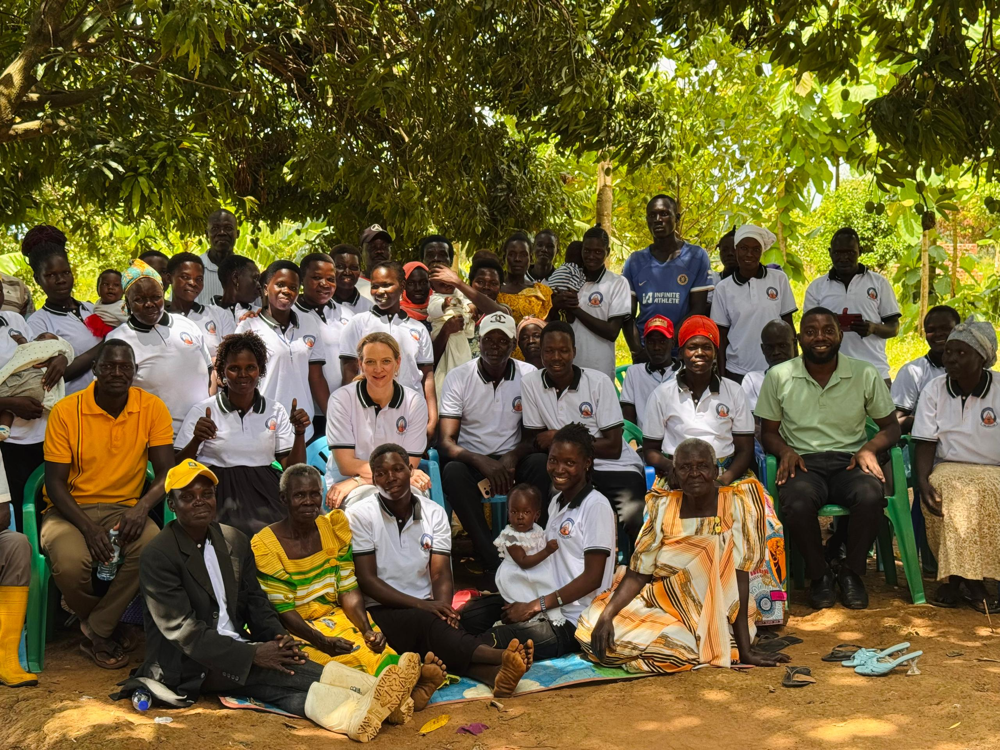
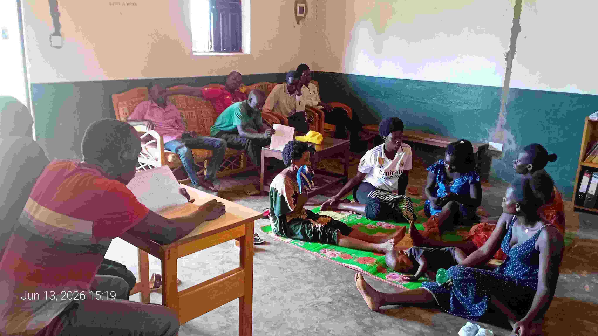
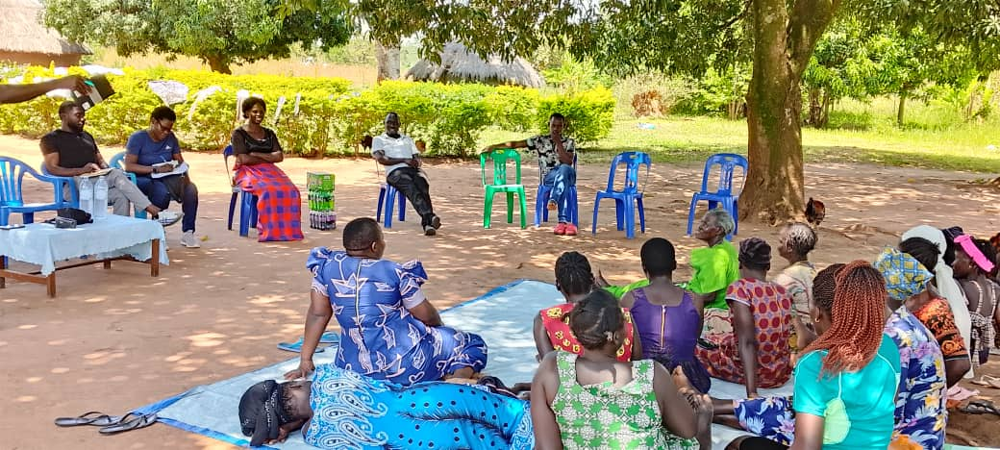
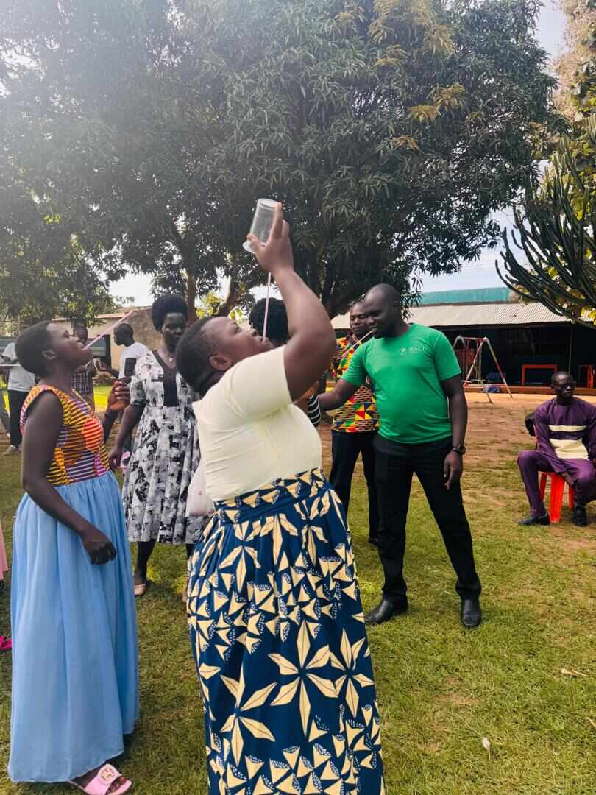

Together We Rise
Explore Our Programs
Discover the life-changing programs and community initiatives CEN has to offer. From youth leadership to women's advocacy — there is a place for everyone.
View All Programs →What We Do

Advocacy & Social Justice
We amplify community voices and push for policies that protect rights, promote equity, and create fair opportunities for all — especially marginalized groups.

Education & Skills Development
Through workshops, mentorship, and skills training, CEN equips individuals with the knowledge and tools to build better futures for themselves and their communities.

Health & Well-being
CEN promotes mental and physical health through awareness campaigns, psychosocial support programs, and community health initiatives tailored to local needs.

Youth Engagement
Young people are the future. CEN runs leadership programs, sports, and civic engagement activities that inspire youth to lead positive change in their communities.